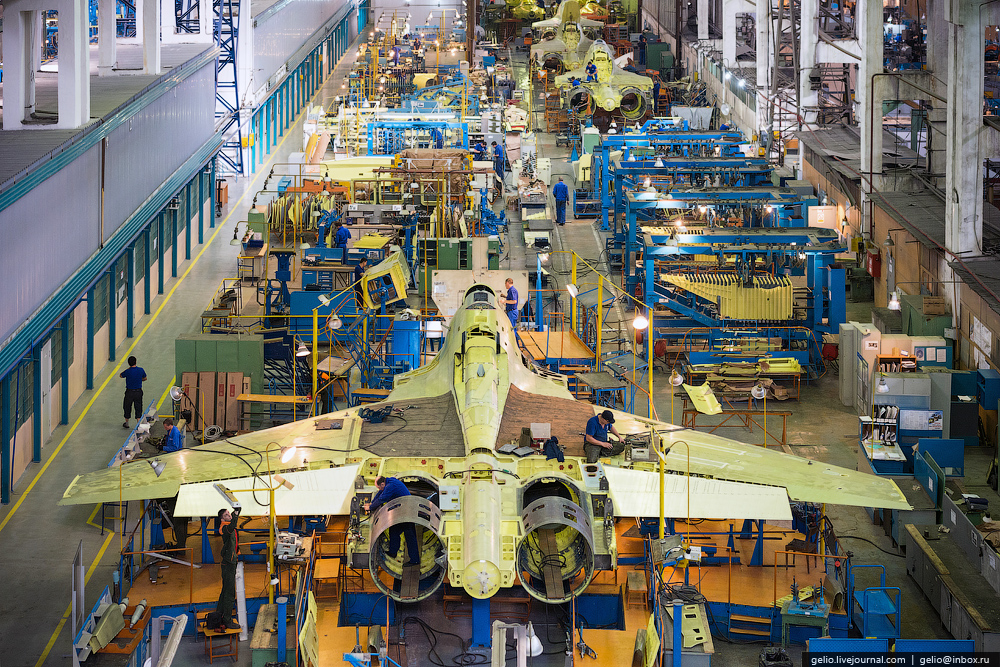
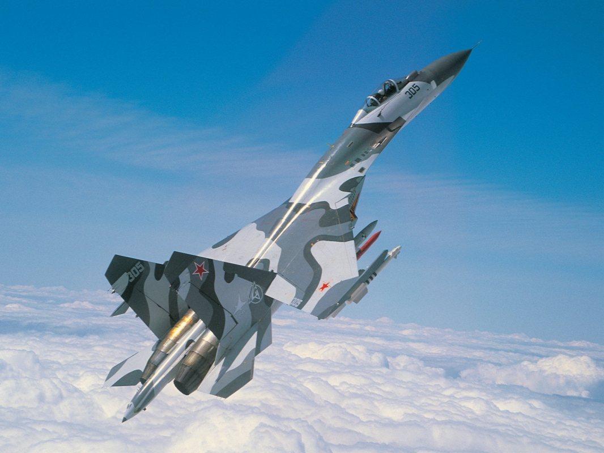
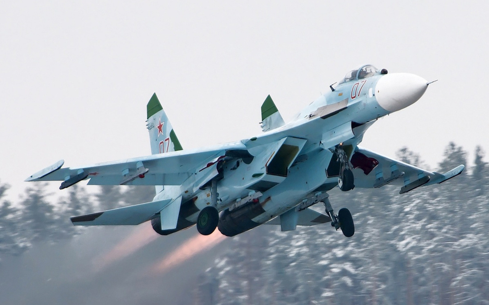

История создания
В начале 60-х годов появилось новое поколение истребителей, которые имели в своей компоновке ряд сходных признаков, что определяло весьма близкие характеристики этих машин. Они имели максимальную скорость примерно в два раза превышающую звуковую, потолок – 18-20 км, оснащались довольно совершенными бортовыми РЛС и мощным ракетным вооружением.
В то время считалось, что боевые реактивные самолеты все больше будут походить на скоростные многоразовые ракеты, боестолкновения в воздухе будут проходить на средних и дальних дистанциях, а воздушные свалки времен прошедшей войны окончательно канули в Лету. Эти истребители имели крыло с тонким профилем и высокой удельной нагрузкой, что давало ощутимые преимущества на сверхзвуке, однако значительно снижало маневренность и увеличивало взлетную и посадочную скорость. Основной упор делался на использование ракетного вооружения.
Американцы очень быстро поняли ошибочность данной тенденции, опыт использования авиации во Вьетнамской войне показал, ближний маневренный бой рано списывать со счетов. «Фантомы» имели определенное преимущество на средних и дальних дистанциях, но гарантировано проигрывали более манёвренным истребителям МиГ-21 в ближнем бою.
Примерно с середины 60-х годов на Западе началась гонка по созданию истребителя четвертого поколения. Лидером в ней были американцы. Новый истребитель четвертого поколения должен был заменить надежные, но устаревшие «Фантомы». В 1966 году было принято решение о развертывании программы FX (Fighter Experimental).
